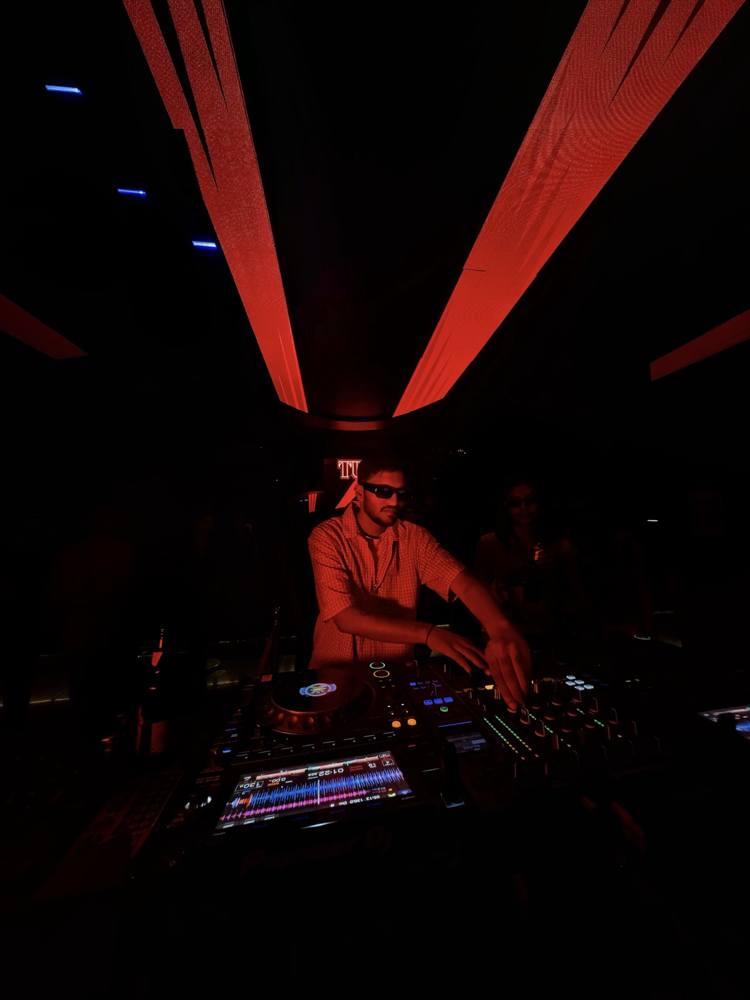
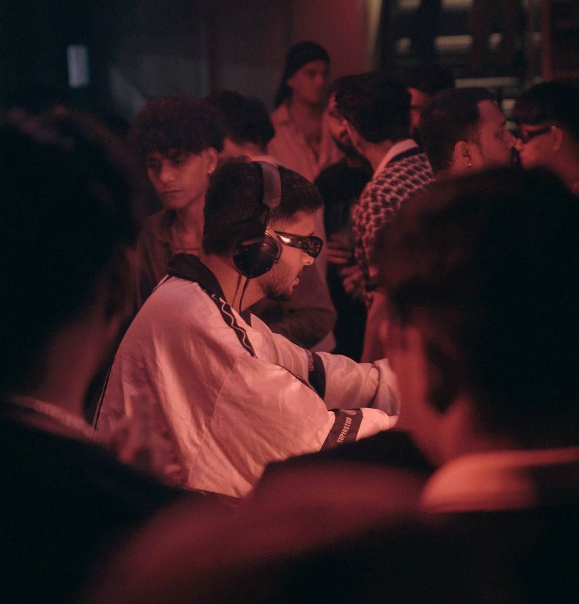
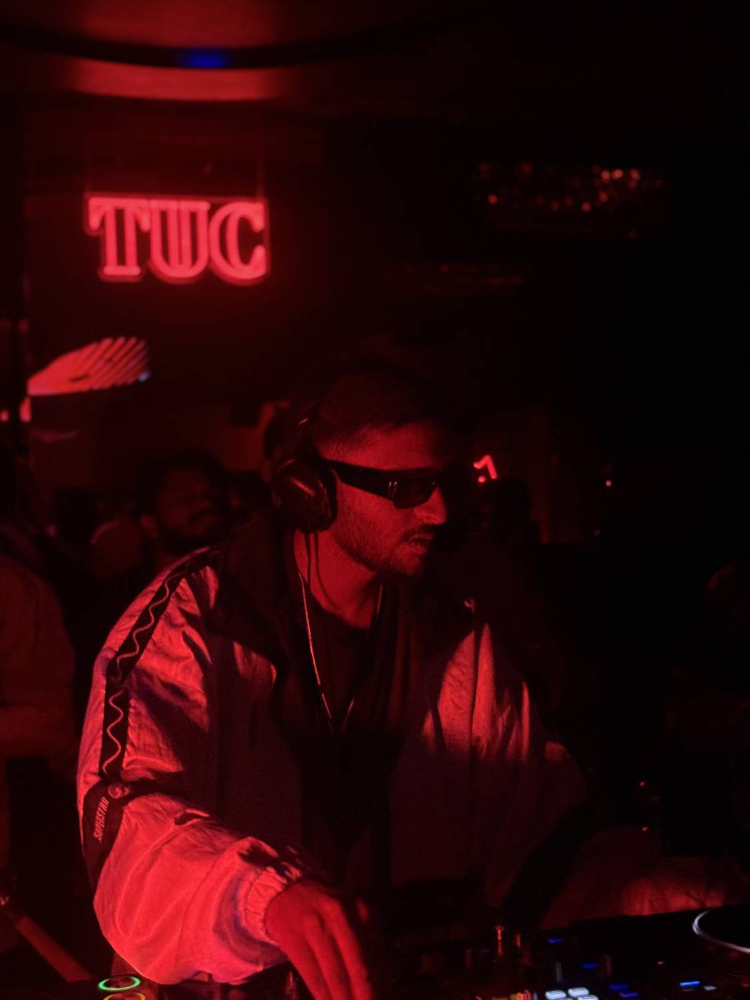
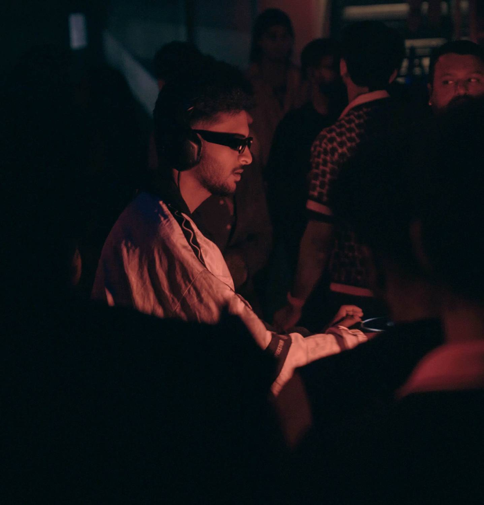
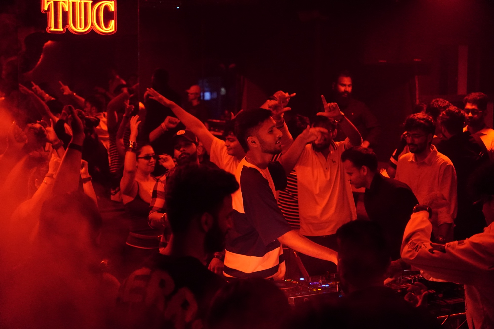
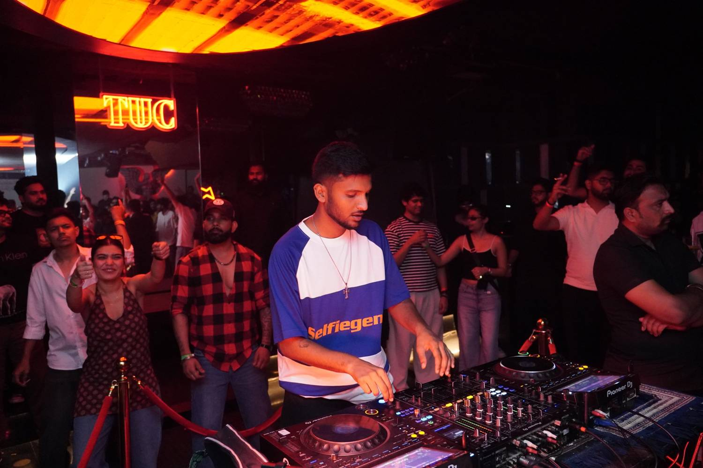

Homeboy is an emerging force in Pune's underground music scene, recognized for his eclectic blend of indie dance, nu disco, breakbeat, and minimal techno. His sets move fluidly between hypnotic, groove-driven passages and high-energy peaks, delivering an immersive sonic journey that keeps the dance floor engaged from start to finish.


Alongside his work as a performer, Homeboy is deeply committed to music production and to mentoring the next generation of artists, offering instruction in both DJing and music production to aspiring talent across the city. He has performed at some of Pune's leading venues, including Epitome, Mask Club, Sky Stories, Fat Pigeon, Raaz, At The Club, Bailamos, Socio, and Zurus. With his mixes available on Mixcloud, Homeboy continues to push creative boundaries and introduce fresh sounds to the community.
Signature sound
- Nu Disco
- Indie Dance
- Break Beat
- Minimal Techno
- Deep underground
techno - Deep underground


Collaboration packages
Opened for few of the most reputed names in the industry like Aayna & Alex Wilcoxx
Hosts multiple podcasts like one run session catering to the elite few in underground industry.

Client feedback
“Homeboy is an amazing DJ and a powerful source of storytelling featuring top chart playlists along with open format DJ’ing.”
Homeboy tends to deliver impromptu mixing according to the dance floor and sets the vibe keeping in mind the need of the hour.

Get in touch!
- Emailhhomeboy19@gmail.com
- Mixcloudmixcloud.com/homeboy
- Phone(91) 876-754-2447